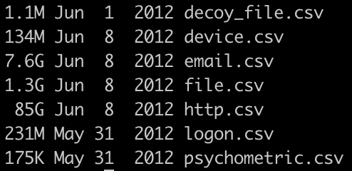

Our team researched how machine learning (ML) could best be applied to the problem of detecting insider threats with a general use system. after researching what data would be readily available, and processing that data to be usable, our team determined that such a solution would be viable.
Our team looked at multiple websites to get an idea of
what kind of data is on the web for insider threats and
found a dataset from Carnegie Mellon University (CMU) to
be the best. Their
dataset
is over 100 gigabytes of
computationally generated semi-realistic data. Before
finding this dataset it was important to first get an
understanding of what kind of data can be used to detect
an insider threat early. In a realistic scenario many
companies have the ability to monitor emails, web history,
device history, and background checks. The CMU team has
went through multiple generations of dataset creation to
make their data more realistic and easier to interpret,
their dataset ended up fitting the needs of our team better
than any other datasets our team found.
The CSV files of the dataset and their sizes:

Files copies to / from removable media
External devices connected / disconnected
Logon / logoff time
Below are some other features which our team explored: